gPROMS generates a linearised model from three specified items of information:
the non-linear model described by the equation
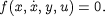
a set of input variables U; and
a set of output variables Y.
The linearised model is of the general form:
where X is a set of state variables and A, B, C and D are matrices of appropriate dimensions.
Although the above equation seems to be very similar to
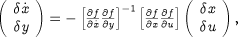
, the variable sets X, Y and U are not generally identical to x, y and u, respectively. More specifically:
the input variables U specified by the user are generally a subset of x, y, u;
the output variables Y specified by the user are generally a subset of x, y, u;
the state variables X are determined automatically by gPROMS as the minimal subset of x that is necessary to express the effects of the specified inputs U on the specified outputs Y via relationships of the form

To understand the above points, consider a process of the form shown in the figure below . It comprises four inter-connected sub-processes ("blocks'').
Now consider the following cases:
Case 1: specify 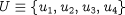 and 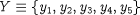 .
This is the "classic'' case in which the linearised model
corresponds exactly to the non-linear model

The set of states X in the linear model is identical to x, i.e. 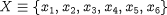 and the linearised model will be derived from the equations in all four blocks, i.e. the entire non-linear model.
Case 2: specify 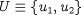 and  .
.
This is still a "classic'' case in the sense that U and Y are subsets of the true process inputs u and outputs y respectively. The set of states X that is required in the non-linear model

to describe the effects of U on
Y still comprises the entire set of
differential variables x, i.e.
 and the linearised model will still be derived
from the entire non-linear model.
and the linearised model will still be derived
from the entire non-linear model.
Case 3: specify 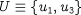 and 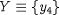 .
This is similar to Case 2. However, the set of states X that is required in
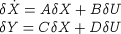
to describe the effects of U on Y needs to include only a subset of the differential variables x, i.e. 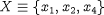 . The linearised model will be derived from the non-linear equations in blocks 1 and 3 only.
Case 4: specify 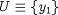 and 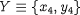 .
This is a "non-classic'' case in which the specified set of inputs U includes a variable that is actually an output of the non-linear model. The set of states X that is required to describe the effects of U on Y is simply 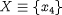 . Moreover, only the non-linear equations in block 3 are needed to form the linearised model.
Case 5: specify 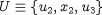 and 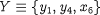 .
This is also a "non-classic'' case in which the specified set of inputs U includes a differential variable the non-linear model. The set of states X that is required to describe the effects of U on Y is now 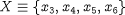 and the linearised model is derived from the equations in blocks 2, 3 and 4 of the non-linear model. Note that the variable x2 appears in the linearised model as an input variable, U, and not as a state, X. Moreover, since it is a specified input, the equations that determine it (i.e. those in block 1) are not used for generating the linearised model.
Case 6: specify 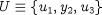 and 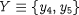 .
Here, the specified set of inputs, U, includes a variable, y2, that is actually affected by another element of U, namely variable u1- consequently, y2 cannot be considered as an independent input variable. In this case, the linearisation procedure automatically removes y2 from the list of inputs. The corresponding columns of matrices B and D (which are zeroes) are removed. Therefore, the number of columns of matrices B and D is reduced accordingly.